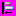
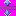
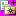
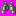
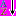
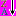
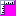
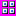

Visual Studio Image Library: Actions (24-Bit, .bmp Format, 16x16)
24-Bit Art
This art is 24-bit color. Transparency should be achieved by mapping RGB(255,0,255) to the background color of the
user interface (UI).
Use Restrictions
Action icons are used to represent commands in the menu structure. These are most often action verbs,
but sometimes are nouns (objects or tools) with actions associated with them,
such as Hide or Show. As part of a visual language, the following images
(or any part of the images) should be
used consistent with, although not necessarily identical to, the usage described
below:
| Image | File Name | Usage |
|---|---|---|
| Editing Actions | ||
| Copy.bmp | Make a copy | |
| Copyfolder.bmp | Copy a folder | |
| Cut.bmp | Cut to clipboard | |
| Delete.bmp | Generic delete | |
| DeleteFolder.bmp | Delete folder | |
| Edit_Redo.bmp | Redo an action | |
| Edit_Undo.bmp | Undo an action | |
| EditBrightContrast.bmp | Change contrast | |
| EditCode.bmp | Edit related code | |
| EditInformation.bmp | Edit information | |
| FillDown.bmp | Copy contents to fill area vertically down | |
| FillLeft.bmp | Copy contents to fill area horizontally left | |
| FillRight.bmp | Copy contents to fill area horizontally right | |
| FillUp.bmp | Copy contents to fill area vertically up | |
| InsertHyperlink.bmp | Insert hyperlink | |
| InsertPhotos.bmp | Insert or display photos | |
| InsertPicture.bmp | Insert or display photo | |
| InsertTabControl.bmp | Indicate a tab control or the action of adding a tab control | |
| Paste.bmp | Paste from clipboard | |
| Rename.bmp | Rename | |
| Formatting Actions | ||
| AlignObjectsBottom.bmp | Align selected elements to the baseline | |
| AlignObjectsCenteredHorizontalHS.bmp | Align selected elements centered horizontally | |
| AlignObjectsCenteredVerticalHS.bmp | Align selected elements centered vertically | |
|  | AlignObjectsLeft.bmp | Align selected elements left |
| AlignObjectsRight.bmp | Align selected elements right | |
| AlignObjectsTop.bmp | Align selected elements to the top margin | |
| AlignTableCellMiddleCenter.bmp | Align contents of cell to center | |
| AlignTableCellMiddleLeftJust.bmp | Align contents of cell to left | |
| AlignTableCellMiddleRight.bmp | Align contents of cell to right | |
| AlignToGrid.bmp | Align element to the grid | |
| BehindText.bmp | Place object behind text | |
| Bold.bmp | Character formatting: Bold text | |
| BringForward.bmp | Bring current element up one layer | |
| BringToFront.bmp | Bring current element in front of all other elements | |
| Choosecolor.bmp | Display a dropdown of color swatches | |
| Color.bmp | Launch UI to allow for color choices | |
| Color_eyedropper.bmp | Choose a color by pointing with the mouse | |
| Color_font.bmp | Choose a font (foreground) color | |
| Color_linecolor.bmp | Choose a linecolor | |
| Color_fill.bmp | Choose a color to fill the selected area | |
| DisplayInColor.bmp | Display in color | |
|  | ExpandSpace.bmp | Increase space between elements |
| FlipHorizontal.bmp | Flip elements horizontally | |
| FlipVertical.bmp | Flip elements vertically | |
| Font.bmp | Change font (pick through some kind of picker UI) | |
| FontDialog.bmp | Launch font dialog; choose font | |
| Forecolor.bmp | Choose font color | |
| Highlight.bmp | Mark elements or words with highlight | |
| HtmlBalanceBraces.bmp | Balance HTML braces | |
| Indent.bmp | Indent selection | |
| IndentRTL.bmp | Indent selection (right to left orientation) | |
| Italic.bmp | Character formatting: Italic text | |
| LineColor.bmp | Choose line color | |
| LinkLabel.bmp | Make selection into a link | |
| List_Bullets.bmp | Create bulleted list | |
| List_Numbered.bmp | Create numbered list | |
| List_NumberedRTL.bmp | Create numbered list (right to left orientation) | |
| List_NumberedVertT.bmp | Create vertical numbered list (bottom up) | |
| List_NumberedVertTB.bmp | Create vertical numbered list (top down) | |
| Outdent.bmp | Outdent selected elements | |
| RecolorPicture.bmp | Edit colors in picture | |
| Resize.bmp | Change the size details of the image | |
| SendBackward.bmp | Send selected object back behind the next element | |
| General Actions or Tools | ||
| Animate.bmp | Add animation to the selected element | |
|  | AddToFavorites.bmp | Add element to Favorites |
| CheckGrammar.bmp | Check grammar of selection or file | |
| CheckSpelling.bmp | Check spelling of selection or file | |
| CompareVersions.bmp | Compare two different versions of one item | |
| Conflict.bmp | Indicate a conflict or to launch conflict resolution UI | |
| Dial.bmp | Connect through a phone line | |
| Fax.bmp | Send a fax or launch UI to get fax details | |
| Find.bmp | Launch search UI or commit search action (when associate with textbox) | |
|  | Find24_VS.bmp | Launch search UI or commit search action (use when monochrome is preferred) |
| FindNext.bmp | Find the next element | |
| FindNext_VS.bmp | Find the next element (Visual Studio style) | |
| FindPrevious_VS.bmp | Find the next element (Visual Studio style) | |
| FormRun.bmp | Run the current project, form or application | |
| FormulaEvaluator.bmp | Evaluate formula | |
| Function.bmp | Define a function | |
| GetLatestVersion.bmp | Get latest version of the selected item | |
| ImagerScan.bmp | Scan | |
| ImportXML.bmp | Import XML contents | |
| InsertPage.bmp | Insert a page (new or existing) | |
| MoveFolder.bmp | Move folder | |
| MoveToFolder.bmp | Move element to a specified folder (launch UI to choose folder) | |
| MultiSelect.bmp | Select multiple items | |
| Open.bmp | Launch UI to browse to an existing item to open | |
| OpenFolder_24.bmp | Launch a dialog to allow for browsing to folders | |
| OpenFolder.bmp | Open the selected folder | |
| OpenSelectedItem.bmp | Open the selected item | |
| Pause.bmp | VCR control: Pause (general) | |
| PauseRecorder.bmp | VCR control: Pause recording | |
| Play.bmp | VCR control: Play | |
| Print.bmp | Send document or element to printer | |
| PrintPreview.bmp | Launch UI to allow for previewing printer results | |
| PrintPreviewDialog.bmp | Display a dialog to preview print results | |
| PrintSetup.bmp | Launch UI to allow for margin and other document details to be specified | |
| ProtectForm.bmp | Lock form from changes | |
| ProtectSubdocument.bmp | Lock subdocument from changes | |
| PublishPlan.bmp | Allow document to be publicly viewable | |
| PublishToWeb.bmp | Allow document to be viewable on the web | |
| Record.bmp | VCR control: Record | |
| Repeat.bmp | Repeat last action | |
| Restart.bmp | Restart | |
| RightsRestricted.bmp | Restrict viewing or editing permissions on the current document or file | |
| Save.bmp | Save changes in current element or file | |
| SaveAll.bmp | Save changes in all open files | |
| SaveAsWebPage.bmp | Save document in html format | |
| SaveFormDesign.bmp | Save design details | |
| Search.bmp | Alternative to Find: launch UI to allow for searching | |
| SearchFolder.bmp | Search for a folder | |
| SearchInFolder.bmp | Search within a folder | |
| SearchWeb.bmp | Search the web | |
| Send.bmp | Attach element to email correspondence | |
|  | SortAscending_24.bmp | Sort elements (in specific direction) |
|  | SortDescending_24.bmp | Sort elements (in specific direction) |
| SplitSubdocument.bmp | Split document into subdocuments | |
| Stop.bmp | Stop the current process | |
| SychronizeList.bmp | Synchronize two lists | |
| Zoom.bmp | Generic zoom: launch dialog or cascade to allow for choosing zoom aspect | |
| Elements or Actions related to an element | ||
| Alerts.bmp | Add an alert, signify that an alert is set, open UI to manage alerts | |
| Attachment.bmp | An attachment; browse to file for attachment to the current document | |
| AppWindow.bmp | Generic symbol: application window | |
| Audio.bmp | A sound file, play a sound file | |
| BackgroundSound.bmp | Add or browse to a background sound file | |
| BarCode.bmp | Any usage for a bar code | |
| book_active_directory.bmp | Launch active directory | |
| book_address.bmp | Launch address book | |
| Book_angle.bmp | Launch documentation | |
| book_hardcvr.bmp | Launch documentation | |
| Book_open.bmp | Documentation (open) | |
| book_report.bmp | Object: represents a book or report (variable usage) | |
| Book_StackOfReports.bmp | Objects: represents a collection of books or reports (variable usage) | |
| Breakpoint.bmp | Used to denote a breakpoint, or setting a breakpoint | |
| Calculator.bmp | Launch a calculator | |
| Calendar_schedule.bmp | Launch a schedule or calendar, or choose a calendar date | |
| Checkbox.bmp | Checkbox (checked) | |
| Comment.bmp | Add or edit a comment | |
| Document.bmp | Launch a new document, or use as a base document for annotation | |
| DoubleLeftArrow.bmp | Generic arrow: variable meaning | |
| DoubleRightArrow.bmp | Generic arrow: variable meaning | |
| DownloadDocument.bmp | Download a document | |
| eps_closed.bmp | Indicate correspondence that has not been viewed | |
| eps_open.bmp | Indicate correspondence that has been previously viewed | |
| eps_open_large.bmp | Indicate correspondence that has been previously viewed | |
| Envelope.bmp | Mail message or correspondence | |
| Expiration.bmp | Associate with an element that will expire - choose expiration date | |
| Flag_blue.bmp | Mark element or file (may be importance or simple grouping) | |
| Flag_green.bmp | Mark element or file (may be importance or simple grouping) | |
| Flag_red.bmp | Mark element or file (may be importance or simple grouping) | |
| Graph.bmp | Display a graph | |
| Help.bmp | Launch associated Help topic | |
| History.bmp | Display History | |
| Home.bmp | Home (web) | |
| HtmlPage.bmp | Launch or create an HTML page | |
| HTMLPassword.bmp | Password control | |
| Link.bmp | Create a hyperlink | |
| HTMLSubmit.bmp | Submit form | |
| NewCard.bmp | Create a new note with contact information | |
| NewDocument.bmp | Create a new document | |
| NewFolder.bmp | Create a new folder | |
| NewMessage.bmp | Create a new message | |
| NewReport.bmp | Create a new report | |
| NewWebsite.bmp | Create a new website | |
| NewWindow.bmp | Launch contents of current window into a new window | |
| Note.bmp | Create, add or edit a note | |
| Options.bmp | Launch options UI | |
| Organizer.bmp | Launch an organizer or indicate that the current selection will be organized in some way | |
| Orgchart.bmp | Create or display an organizational chart | |
| PageNumber.bmp | Display page number, or add a page number to the document | |
| PieChart.bmp | Chart: piechart | |
| PieChart3D.bmp | Chart: 3D chart | |
| Pointer.bmp | Generic mouse pointer (any context) | |
| Properties.bmp | Display properties of selected element in a grid or general properties box | |
| Pushpin.bmp | Indicate that element can be persisted in view | |
| RadialChart.bmp | Chart: radial | |
| RightArrow.bmp | Arrow - any usage | |
| RightArrow2.bmp | Arrow - any usage | |
| RoutingSlip.bmp | Attach routing information or other details to current document | |
| SpeechMic.bmp | Enable microphone or speech capabilities | |
| Symbol.bmp | Symbol (no specific usage) | |
| Task.bmp | Object: task or display list of tasks | |
| Textbox.bmp | Textbox control | |
| ThumbnailLoading.bmp | Generic image symbol - use as image placeholder, any situation | |
| TurnAhead.bmp | Variable meaning | |
| Warning.bmp | Display a non-critical but important warning to the user | |
| Web.bmp | Web | |
| XMLFile.bmp | Object: XML file | |
| Changing Views or Display | ||
| ActualSize.bmp | View a page actual size | |
| ArrangeSideBySide.bmp | Arrange the selected pages side by side | |
| CanvasScale.bmp | Scale the visible document canvas | |
| CenterAcross.bmp | Center contents across container | |
| Filter2.bmp | Indicate that a view is filtered or launch UI to allow for filtering | |
| GoLtr.bmp | Go (left to right orientation) | |
| GoRtl.bmp | Go (right to left orientation) | |
| GoToNext.bmp | Display next element, topic, document, or similar | |
| GoToNextRecord.bmp | Display the next record in the set | |
| GoToParentFolder.bmp | Move up one folder in the directory hierarchy | |
| GoToPrevious.bmp | Display the previous record in the set | |
| GoToPreviousMessage.bmp | Display previous message | |
| GoToPreviousRecord.bmp | Display previous record | |
| GoToShortcuts.bmp | Indicate a shortcut | |
| Legend.bmp | Display a legend | |
| MonthlyView.bmp | Display a monthly view | |
| MultiplePages.bmp | Show multiple pages at a time, or allow for multiple page layout | |
| NavBack.bmp | Navigate backward | |
| NavForward.bmp | Navigate forward | |
| NextPage.bmp | Display or move to new page | |
| PageUp.bmp | Move page up | |
| PageWidth.bmp | Set page width, or allow contents to spread across entire width | |
| Portrait.bmp | Document contents displayed in vertical format | |
| PortraitToLandscapeView.bmp | Change document orientation from horizontal to vertical | |
| PreviousPage.bmp | Display previous page | |
| Refresh.bmp | Refresh view in window | |
| RefreshDocView.bmp | Refresh document contents | |
| Refresh_Cancel.bmp | Cancel refresh operation | |
| RightToLeftDocument.bmp | Display contents right-to-left | |
| ShowAllComments.bmp | Show all comments related to the current selection | |
| ShowGridlines.bmp | Display non-visible gridlines | |
| ShowGridlines2.bmp | Display non-visible gridlines | |
| ShowRulelines.bmp | Display rule lines | |
|  | ShowRuler.bmp | Display ruler |
| ThumbnailView.bmp | Show a display which contains multiple images or documents | |
|  | ViewThumbnails.bmp | Show multiple images or documents |
| Data | ||
| AddTable.bmp | Add a data table | |
| DataContainer_MoveFirst.bmp | Data: move to first record | |
| DataContainer_MoveLast.bmp | Data: move to last record | |
| DataContainer_MoveNext.bmp | Data: move to next record | |
| DataContainer_MovePrevious.bmp | Data: move to previous record | |
| DeleteTable.bmp | Delete data table | |
| EditTable.bmp | Edit data table contents | |
| PrimaryKey.bmp | Data: indicate the primary key | |
| Relationships.bmp | Show relationships between tables or elements | |
| Table.bmp | Object: datatable | |
| Changing Window Configuration | ||
| ArrangeWindows.bmp | Arrange windows horizontally | |
| CascadeWindows.bmp | Cascade the open document windows | |
| FullScreen.bmp | Go into a visual mode which maximizes real estate for viewing or editing | |
| Windows.bmp | Windows | |